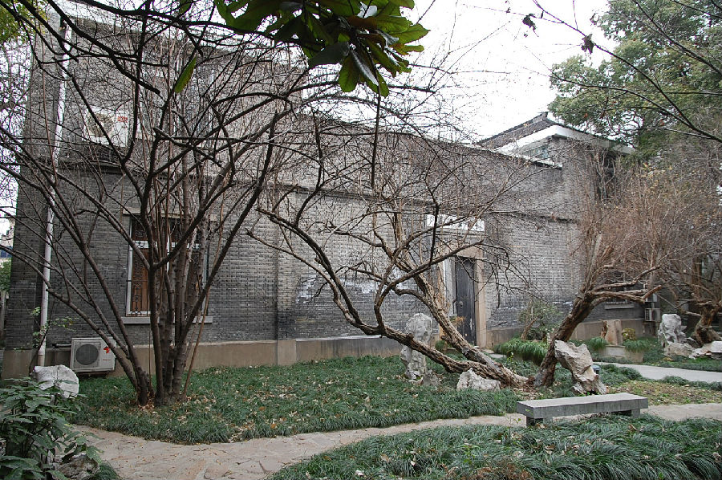

嘉兴市文物保护网 · 市级文物保护点 · 2020-11-09 · 原文

嘉兴红卍字会旧址位于嘉兴市南湖区建设街道瓶山社区中和街36号，由嘉兴红卍字会（据传前身为同善社，以慈善为名宣扬迷信的组织，发源于山东，全国各城市有分会，教旨是儒、释、道、耶、回五教合一，五教上设一总神，称为老祖。）于20世纪30年代建，原是教会活动场所，1942年，汪精卫、陈公博等来嘉兴，在这里召集浙江清乡会议，后成立清乡委员会驻浙江办事处。抗战胜利后，此处改为卍慈小学，1949年改名中和街小学。现作为蒲华美术馆（嘉兴画院）办公场所，占地面积2268平方米。砖混结构，坐北朝南，建筑东西并排两处，东为长方形二层楼房，南北长33.46米、东西宽10.5米；西为四合式宅院，北侧二层楼房，东西各有厢房，南为门楼，中为天井。原为木制门窗，内外观已重新装修改造。楼房一层为西式半圆形大厅，局部结构也为西洋装饰。院中另有凉亭为建国后添置。旧址建筑风格中西合璧，曾是新兴宗教的活动场所，并发生过一些重要历史事件，具有较高的历史和艺术价值。2010年公布为嘉兴市文物保护点。